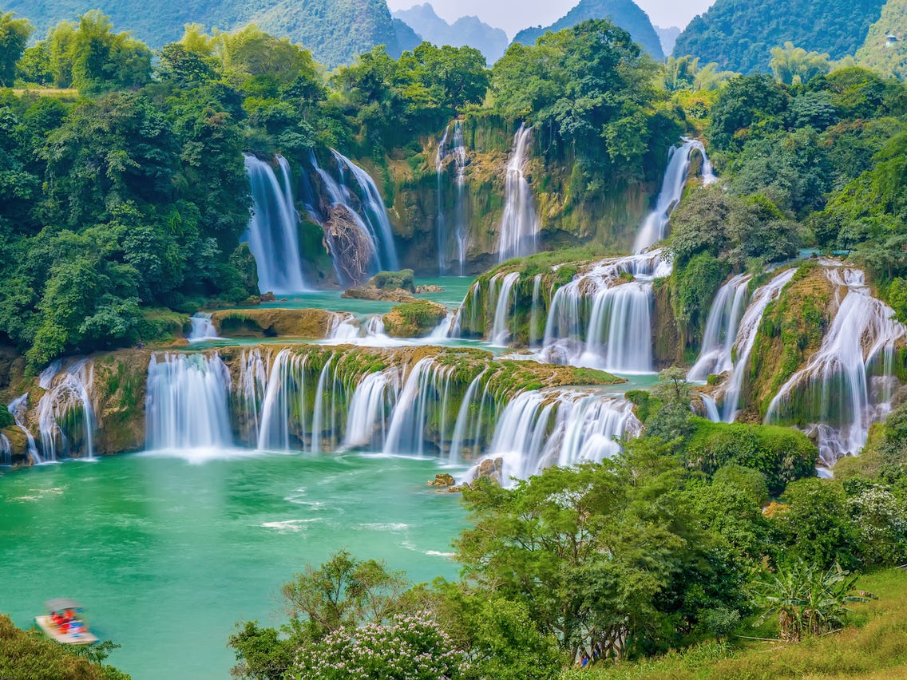

FIRST TITLE
Title description, May 4, 2021

The waterfall
forms a swish curve, steepest toward the supply, most level towards the mouth.
Waterfalls interrupt this curve, and their presence may be a live of the progress of abrasion.
"Within a river's duration, a water may be a temporary feature that's eventually worn away....
With the passage of your time...
the inevitable tendency of rivers is to eliminate any water which will have shaped ...
..
SECOND TITLE
Title description, Sep 8, 2020
Night or nighttime (also spelled night-time or night time)
is that the amount of close darkness from sunset to sunrise throughout every 24-hour day,
once the Sun is below the horizon. the precise time once night begins and ends (equally true with evening)
depends on the placement and varies throughout the year.
once night is taken into account as a amount that follows evening,
it's sometimes thought of to start out around eight pm and to last to concerning four am. Night ends with returning of morning at sunrise.
THIRD TITLE
Title description, April 10, 2019

sunrise (or sunup ) is that the moment once the higher rim of the Sun seems on the horizon within the morning.
The term also can discuss with the complete method of the star disk crossing the horizon and its concomitant atmospherical effects.
Although the Sun seems to "rise" from the horizon,
it's really the Earth's motion that causes the Sun to look.
The illusion of a moving Sun results from Earth observers being during a rotating reference frame.
FOURTH TITLE
Title description, April 20, 2018
Rain is liquid water within the type of droplets that have condensed from part vapor so become significant enough to comprise gravity.
Rain could be a major part of the water cycle and is to blame for depositing most of the H2O on the world.
It provides appropriate conditions for several varieties of ecosystems,
moreover as water for electricity power plants and crop irrigation.
The major reason for rain production is wet moving on three-dimensional zones of temperature and wet contrasts referred to as weather fronts.